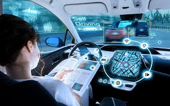

Autonmous vehicles are bound to be on the road in the near furture. This is an idea an relaistic concept that has been looked for many year. At the university of munich they have created algorthims that peer into the future in a sense. These algorithms create a multitude of scenerios that are then ran through and the best course of action is decided upon. This of course having to come from real time data. In the ability to see these "futures". They have seen that they are able to predeict a great deal of possible accidents and then avoid them in their trial tests. They will need to make streamlined versions of these current programs as without any changes the computations take to long to make decision on the real road. These stream lined versions will allow for quick calculations to be made that will allow for the vehcile to make a decision on its movments. Since they will be able to make these calculations that way it also is made possible since the mathmatical side of it will now be easier to handle over all. The university will still need to use real traffic data to try and and test inside of a virtual environment that allows them to be as accurate as possible. If you would like to read the article you self then you can click here .
New news will be posted every tuesday at 12 o'clock PM
